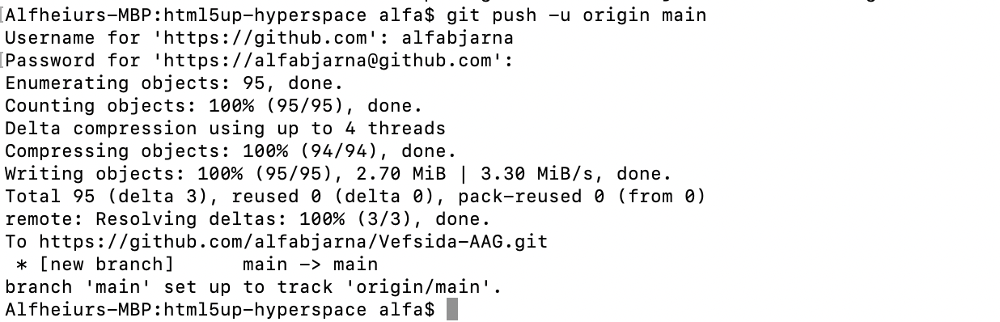

Verkefni 1
Þessi síða skráir þau skref sem ég tók til að byggja og birta ferilvefinn minn fyrir þetta námskeið. Síðan byggir á Hyperspace sniðmáti frá HTML5 UP.
1. Uppruni sniðmáts & ákvarðanataka
Fyrst horfði ég á YouTube myndbönd. Ég skoðaði mismunandi HTML5 UP sniðmát og valdi Hyperspace vegna þess að það er hreint, hefur skemmtilegan stíl, er aðlögunarhæft, og hefur hliðarvalmynd sem virkar vel fyrir ferilvef (Heim, Verkefni, Um mig, Hafa samband).

Mynd 1: Hyperspace sniðmátið frá HTML5 UP.
Ég horfi á eitt myndband á Youtube og fann síðan síðuna Pheonix code help sem ég notaði til að hjálpa mér að breyta ýmsu í Phoenix kóðanum til að betrum bæta síðuna. Einnig notaði ég mikið gervigreind til að hájlpa mér ef ég stóð föst á einhverju.
2. Upphaflegar hönnunarforsendur
-
Eftir að hafa opnað sniðmátið í Phoenix Code byrjaði ég að sérsníða það með því að skipta út staðgengilstexta fyrir minn eigin texta og tengla. Ég breytti einnig uppbyggingu og útliti til að passa við mínar óskir og til að tryggja að allar nauðsynlegar upplýsingar fyrir verkefnið væru með og auðvelt væri að finna þær.
- Valmynd: Hliðarvalmynd á forsíðu sem flettir að köflum (Verkefni / Um mig / Hafa samband).
- Undirsíður: Hvert verkefni hefur „Lesa meira“ hnapp sem leiðir á sérstaka síðu (t.d.
project1.html). - Samræmi: Ég hélt stíl sniðmátsins svo allar síður líti eins út á tölvu og í síma.
- Uppbygging efnis: Verkefni fyrst (stutt yfirlit), síðan Um mig/CV, og svo Hafa samband. Næsta skref var að endurnefna skrána generic.html í project1.html. Ég afritaði þessa skrá nokkrum sinnum til að nota sem grunn fyrir næstu verkefni. Eftir það breytti ég valmyndinni svo hægt væri að nálgast verkefnasíðurnar úr henni.

Mynd 2: Verkefni 1.
Næst vann ég að borðanum á forsíðunni. Ég bætti við nafninu mínu og stuttri lýsingu undir því sem útskýrir hvað vefsíðan inniheldur. Fyrir neðan er hnappur sem ég ákvað að tengja við verkefnasíðuna þar sem öll verkefnin eru. Ef ýtt er á eitt verkefni ætti það að leiða á ítarlegri lýsingu á verkefninu.

Mynd 2: Forsíðuborði.
Ég bætti bæði við Um mig kafla og Hafa samband kafla til að passa betur við tilgang vefsíðunnar. Ég átti í fyrstu í erfiðleikum með að tengja CV skjalið mitt rétt, svo ég notaði gervigreindaraðstoð til að finna lausn á vandanum. Eftir að hafa fylgt leiðbeiningunum tókst mér að bæta við virkum niðurhalstengli fyrir CV.

Mynd 2: Kóði til að bæta við virkum niðurhalstengli fyrir CV.
Að lokum bætti ég við myndum í Verkefni 1 hlutann á forsíðunni og einnig á Verkefni 1 síðuna sjálfa. Þetta var sá hluti sem mér fannst erfiðastur. Í fyrstu, þegar ég setti inn fyrstu myndina, var hún of stór og passaði ekki rétt í útlitið. Ég notaði aðferð sem ég fann á W3Schools, sem hefur skýrar og gagnlegar HTML leiðbeiningar. Ég skoðaði upprunalega breidd og hæð myndarinnar í eiginleikum hennar og breytti síðan stærðinni á meðan hlutföllin héldust, þannig að hún birtist í þeirri stærð sem ég vildi.
Ég safnaði skjáskotum á meðan ég vann (kóði, möppuskipan og GitHub Pages stillingar).
Ég minnkaði myndir í vefvænar stærðir (um 1200px breidd) og vistaði þær sem JPG/PNG til að halda hleðslutíma stuttum.
Allar myndir voru settar í images/ og tengdar með hlutfallslegum slóðum.

Mynd 2: Kóði til að láta mynd passa rétt.
Að lokum breytti ég úr fjólubláa litnum yfir í mismunandi bleikan og bætti við "Dark mode" hnapp svo ef það er erfitt að lesa svona bjart þá er hægt að skipta í dekkri lýsingu
3. Hvað vil ég fá út úr námskeiðinu?
Ég er ekki alveg viss hvað ég á að búast við af þessu námskeiði ennþá, nema að ég vona að það verði skemmtilegt og svolítið öðruvísi en flest önnur námskeið í vélaverkfræði. Ég hlakka til að prófa mismunandi tölvustudd framleiðsluferli, eins og laserskurð og fræsingu. Þegar kemur að lokaverkefninu hef ég ekki enn ákveðið hvað ég vil gera. Ég hef ekki skoðað möguleikana mjög mikið enn, en mig langar að búa til eitthvað sem er skapandi, áhugavert og virkilega skemmtilegt að vinna að.
4. Verkfæri og upplýsingagjafar
- Phoenix Code til að breyta HTML/CSS
- HTML5 UP sniðmátsskrár
- Forskoðun í vafra til að prófa útlit og aðlögunarhæfni
- Upplýsingar á netinu (t.d. HTML/CSS heimildir) þegar þörf var á
5. Hlaða upp á GitHub (GitHub Pages)
Fyrst horfði ég á kennslumyndböndin sem kennarinn gaf til að skilja hvernig á að hlaða vefsíðu upp á GitHub og birta hana með GitHub Pages. Eftir það opnaði ég opinberu Git uppsetningarsíðuna fyrir macOS git-scm.com/install/mac. Þar sem síðan mælti með Homebrew setti ég upp Homebrew í gegnum Terminal.

Mynd 4: GitHub Pages stillingar sem notaðar voru til að birta vefsíðuna.
Eftir að Homebrew var sett upp fylgdi ég leiðbeiningunum til að setja upp Git með skipuninni brew install git. Í þessu skrefi lenti ég í vandamálum með stillingar í terminal (PATH/profile) sem komu í veg fyrir að skipanirnar virkuðu rétt í fyrstu. Ég bað gervigreind um hjálp og lagaði vandann með því að bæta við Homebrew shell environment stillingum og staðfesta að Homebrew væri viðurkennt í terminal.

Mynd 4: GitHub Pages stillingar sem notaðar voru til að birta vefsíðuna.
Þegar Git hafði verið sett upp með góðum árangri var næsta skref að frumstilla Git geymslu inni í möppunni með vefsíðunni minni, gera commit á skrárnar og senda allt á GitHub. Eftir að hafa hlaðið verkefninu upp í GitHub geymslu virkjaði ég GitHub Pages undir Settings → Pages og valdi main branch sem uppsprettu. Þetta birti síðuna á netinu og bjó til opinberan tengil.
Eftir að fyrstu útgáfu vefsíðunnar var lokið bjó ég til repository á GitHub og hlóð verkefninu upp með Git í Terminal. Ég gerði þetta með því að búa til aðgang á GitHub og þar bjó ég til nýtt repository. Ég frumstillti repositoryið staðbundið, bætti við öllum skrám, gerði fyrsta commit og sendi síðan verkefnið á GitHub. Þar sem GitHub styður ekki lengur lykilorðastaðfestingu fyrir Git aðgerðir bjó ég til Personal Access Token og notaði það til auðkenningar við push. Eftir að skrárnar voru hlaðnar upp virkjaði ég GitHub Pages undir Settings → Pages og stillti uppsprettuna á main branch. Þetta birti vefsíðuna og bjó til opinberan tengil. Að lokum bætti ég tengli á GitHub repositoryið mitt á vefsíðuna svo auðvelt sé að finna það. Hér fyrir neðan má sjá kóðann sem var notaður í terminal til að vista verkefnið á GitHub.

Mynd 4: Kóði í terminal til að setja upp skrána á GitHub.
Áskoranir og lausnir
- Forskoðunarvandamál: Lagað með því að opna alla möppuna sem verkefni (ekki bara eina skrá) í ritlinum.
- Brotinn stíll/myndir: Lagað með því að halda upprunalegri möppuskipan (
assets/,images/) og athuga slóðir. - Uppfærslur sjást ekki: Leyst með því að commit-a/push-a breytingar og endurhlaða síðuna (hard reload ef þarf).
6. Tengill á geymslu
GitHub geymsla: GitHub Repository